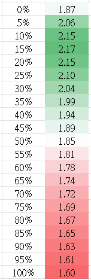

牛市已持續了6個月以上，但Bitcoin dominance仍然高於50%，一點也沒有向下跌的打算。如前一篇Patreon所講，我認為現在有所謂的「altcoin trap」發生，即上一個幣圈周期已進來的人，尤為喜歡選幣，因為認為Bitcoin是新手才持有的東西，而且認為altcoin beta比Bitcoin大，因此買altcoin比Bitcoin划算。
實在太多人問我看好什麼altcoin。以往專欄已寫過，altcoin死亡率很高，並不容易選中明顯跑贏BTC的；而且過去半年看，只有10% altcoin跑贏BTC；再者，即使我說我看好某altcoin，你會分配超過50%倉位買入嗎？不可能且不合理的，因此，買altcoin賺的絕對數值回報（absolute dollar value）不會比BTC的多。例如你敢買100萬hkd BTC，但你不會敢買100萬hkd的狗狗幣，充其量買個10萬。除非你肯定你選的幣一定跑贏BTC 10倍以上，否則這個博弈是負ev的。
即使這概念已提過幾次，但仍有人會不甘只持有BTC，或只持有大幣。為了幫大家止心癢手癢，這次就來分享一個策略 — barbell strategy。
Barbell strategy定義上為，一邊持有大量安全性高的資產，另一邊則持有少量極高風險高回報的資產。傳統上，Barbell strategy的例子為，80%持有債券，然後20%持有高風險股票等等。而近年，則開始有人提倡80%持有傳統60/40組合，然後20%持有Bitcoin！確實是不錯的，一定比只持有傳統資產好。
不過，我的Barbell strategy為大量持有BTC，同時少量持有meme token。
Crypto市場中，爆發性最強的，一定要數meme token，如DOGE、SHIB、WIF、PEPE、FLOKI、BONK、BOME。
千萬不要在幣市作價值投資，不是幣市沒有價值，而是幣市更多是憧憬。看看數據就知道，漲最多的，反而不是基本面最好的，而是0基本面的。為什麼？有基本面的，就是earnings、TVL很透明的，那就很容易被算到PE、PB、PS等數字；如果valuation過高，就會被拋，甚至被hedge fund short。
最有趣是，meme token全沒valuation，所以沒人敢short，而同時散戶不斷買。因此，漲得多的，要不是無value的meme，就是充滿dream的新上市項目。
BTC本來也很實在，礦工賺多少、算力多少、每天交易量多少都能算出來，但這個牛市則不同了。現貨ETF推出，變成有dream，大家都在猜測看有多少傳統資金會湧入，BTC由價值型加密貨幣重新變成增長型加密貨幣。
所以，不要再傻傻的為大量altcoin作fundamental analysis了。Drive altcoin的，sentiment或大戶活動比較重要。
因此，我barbell的risky end的選擇為meme token，尤其是SOL chain上的$WIF。
作為quant trader，當然有backtest。我拿來了2020年至2021年尾的BTC及DOGE來模擬一下這個barbell strategy。
本來持有BTC的sharpe是1.9，而只持有DOGE的sharpe為1.6。結果，經過優化後，發現混入15%的DOGE到組合中，sharpe最高，為2.2！證明[BTC - DOGE]這個組合是成功的，15%的meme成功提高了原組合的回報，同時降低了風險。

這次為什麼選WIF呢？因為不少大戶及VC都在這浪看好SOL這個ethereum killer，但[BTC - SOL]這barbell strategy又不夠特別；[SOL - WIF]又會風險過高，一旦SOL sector出事就會全軍覆沒。因此，[BTC - WIF]頗為合理。
最後，留意，不要用合約買WIF，funding rate會大幅蠶食你的利潤，不要傻傻的持有perp然後跑來問我為什麼虧錢。